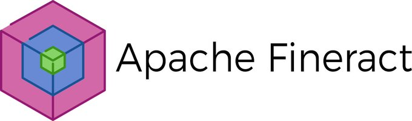

Overview
Fineract is a headless core banking platform meaning it does not have a UI. It is fully API driven whereby all operations are carried out by making API calls and getting a response.
the Mifos UI generally works with Fineract but may not fully support all apache fineract features.
The platform supports most of the standard banking operations: client management, account management, loans, accounting, short/long term deposits and reporting.
A number of configurative and administrative features are available out of the box, these include: roles and permissions, product definition, user management, maker/checker, two factor authentication and many more.
As an open-source project, Fineract is constantly being updated with new features and improvements.
Why Fineract
Fineract is a feature rich open source core banking platform and compares well with other core banking systems. The major advantages of using fineract are:
-
Open source with an active community of contributors who are passionate about providing world class banking system
-
No vendor lock-in, there is a wide range of implementors available to support with implementation, enhancement and post go live support
-
Fully API driven allowing building of applications on top of it and super easy to integrate third party services